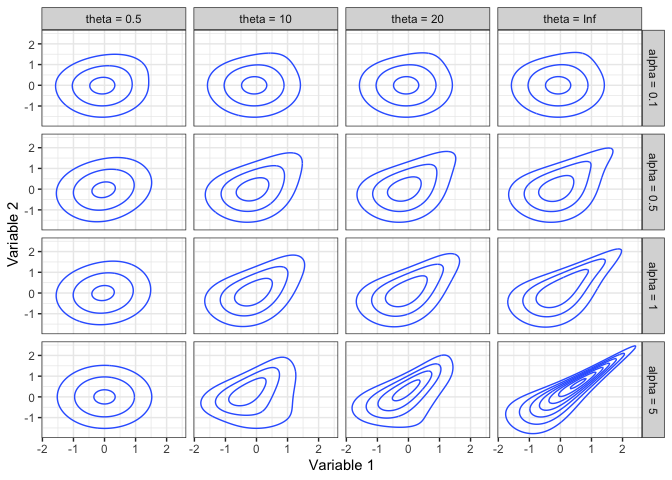

The goal of igcop is to provide computational tools for the Integrated Gamma (IG) and Integrated Gamma Limit (IGL) copula families.
Definition
The IG copula family is defined by parameters θ > 0 and α > 0, with the IGL copula family obtained with θ → ∞. See the vignette for a detailed definition.
Here are some contour plots of some normal scores copula densities.

The IG and IGL copula families are unique in that, when used in a regression context, the conditional distribution of the response (the 2nd copula variable) has an Extreme Value Index that increases with the predictor for an IG copula, and reduces a heavy-tailed response to a light-tailed conditional distribution for an IGL copula. Specifically, the Extreme Value Index of the 2|1 distribution when Variable 2 has a Pareto(1) marginal distribution is 0 for an IGL copula, and is (1+θ(1−u))−1 for an IG copula (Coia 2017).
Usage
library(igcop)This package piggybacks on the base R syntax for distributions, such as dnorm() and pexp(), whose functions adopt the convention:
For IG and IGL copulas:
-
<prefix>corresponds to one of:-
pfor cdf, -
dfor density (andlogdfor log density), -
qfor quantile (for conditional distributions only), and -
rfor random number generation (not supported for conditional distributions).
-
-
<name>corresponds to the possible names:-
igandiglcorrespond to an IG copula and IGL copula, respectively. -
condig12andcondigl12correspond to a conditional distribution of the first variable given the second, of an IG copula and IGL copula respectively. -
condig21andcondigl21correspond to a conditional distribution of the second variable given the first, of an IG copula and IGL copula respectively (also available ascondigandcondiglto match the syntax of the CopulaModel package).
-
Here are some examples, starting with the density of an IG copula:
dig(0.3, 0.6, theta = 3, alpha = 2)
#> [1] 1.096211Computations are vectorized over each argument. Here’s the cdf and density of an IGL copula at different values:
u <- seq(0.1, 0.9, length.out = 9)
v <- seq(0.9, 0.5, length.out = 9)
pigl(u, v, alpha = 4)
#> [1] 0.1000000 0.2000000 0.2999711 0.3988536 0.4888134 0.5508382 0.5683229
#> [8] 0.5447653 0.4998090
digl(0.2, v, alpha = u)
#> [1] 0.8522462 0.8230206 0.8471676 0.8915708 0.9458967 1.0058156 1.0691273
#> [8] 1.1345476 1.2012456It doesn’t make sense to talk about quantiles for a multivariate distribution, so these are only defined for conditional distributions.
Here is an example of a distribution given the first variable (“2 given 1”). Note that the “2 given 1” distributions swap the u and v arguments to better align with the conditioning, and you can either explicitly include the 21 suffix or not.
qcondig(v, u, theta = 5, alpha = 3)
#> [1] 0.7435415 0.7228302 0.7121613 0.7073784 0.7056649 0.7039164 0.6972994
#> [8] 0.6777041 0.6356285
qcondig21(v, u, theta = 5, alpha = 3)
#> [1] 0.7435415 0.7228302 0.7121613 0.7073784 0.7056649 0.7039164 0.6972994
#> [8] 0.6777041 0.6356285Here is the corresponding “1 given 2” distribution. Since this is less common in regression scenarios, you have to explicitly add the 12 prefix for “1 given 2.”
qcondig12(v, u, theta = 5, alpha = 3)
#> [1] 0.8896885 0.8114873 0.7297887 0.6598357 0.6097781 0.5811235 0.5749922
#> [8] 0.5976573 0.6689895Generating 5 values from an IG copula:
Developers
Besides the copula quantities described above, the generating functions (as outlined in the vignette) are included in this package as internal functions, and directly link to C++. The notation is:
-
ψα is
igl_gen(); -
κα is
igl_kappa(); -
Hα is
interp_gen(); and -
Hκα is
interp_kappa().
Related functions have the following suffixes:
-
_inv: function inverse. -
_D: function derivative. -
_D1: function derivative with respect to first argument.
There are three functions involved when linking to C:
- The R function (such as
igl_gen()) recycles the arguments by passing them through theformals_to()function, which usesvctrs::vec_recycle_common(). - These recycled arguments are passed to the corresponding R function with the
_vecsuffix, which passes these functions into C++ (via the infrastructure created by runningRcpp::compileAttributes()). - The C++ functions that accept vector inputs have the
_vecsuffix. These functions loop along each entry, and feeds the scalar values into a C++ function for computation (either with the_singleprefix, or the_algoprefix when the function contains a Newton-Raphson algorithm).
Map of dependencies among functions:
-
igl_gen:pgamma -
igl_gen_D:pgamma -
igl_gen_inv_algo:qgammaigl_genigl_gen_D -
igl_gen_inv:igl_gen_inv_algo -
interp_gen:igl_gen -
interp_gen_D1:igl_gen -
interp_gen_inv_algo:igl_gen_inv_algointerp_geninterp_gen_D1 -
interp_gen_inv:interp_gen_inv_algo -
igl_kappa:pgamma -
igl_kappa_D:dgamma -
igl_kappa_inv:qgamma -
interp_kappa:igl_kappa -
interp_kappa_D1:igl_kappaigl_kappa_D -
interp_kappa_inv_algo:igl_kappa_invinterp_kappaigl_kappaigl_kappa_Dinterp_kappa_inv -
interp_kappa_inv:interp_kappa_inv_algo -
pcondig21:interp_gen_invinterp_kappa -
qcondig21:interp_kappa_invinterp_gen -
qcondig12_algo:interp_gen_invigl_genigl_gen_Dpcondig12 -
qcondig12:qcondig12_algo -
pcondig12:interp_gen_invinterp_gen_D1 -
dig:interp_gen_invinterp_kappa_D1interp_gen_D1 -
logdig:interp_gen_invigl_kappaigl_kappa_Digl_genigl_gen_D -
pig:interp_gen_inv -
rig:qcondig21 -
qcondigl21:igl_kappa_inv -
pcondigl21:igl_gen_invigl_kappa -
pcondigl12:igl_gen_invigl_gen_D -
qcondigl12:igl_gen_invpgammaqgamma -
digl:igl_gen_invigl_kappa_Digl_gen_D -
pigl:igl_gen_invigl_gen -
rigl:qcondigl21
Attributions
Package developed and maintained by Vincenzo Coia, with thanks to Harry Joe for his help converting the Newton Raphson algorithms and related functions to C (originally coded in R in igcop Version 0.2.0).